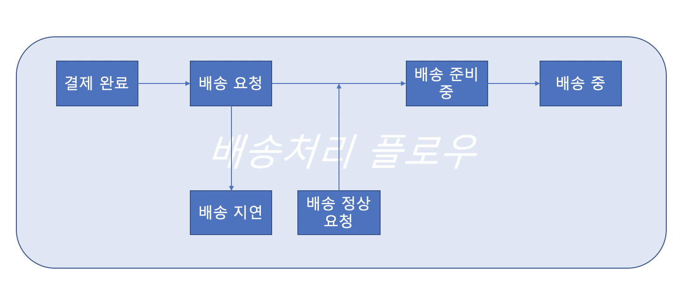
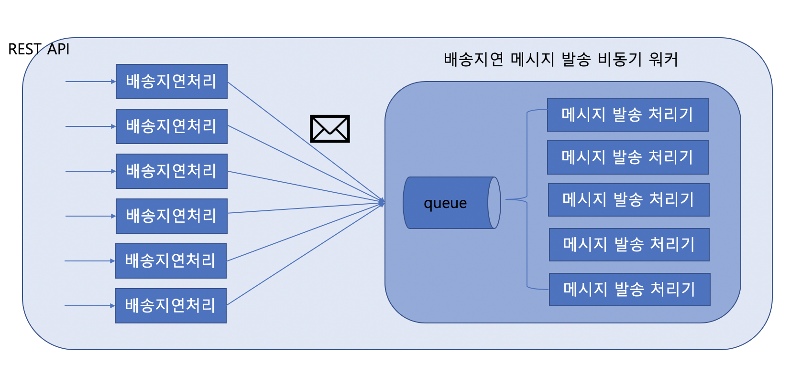
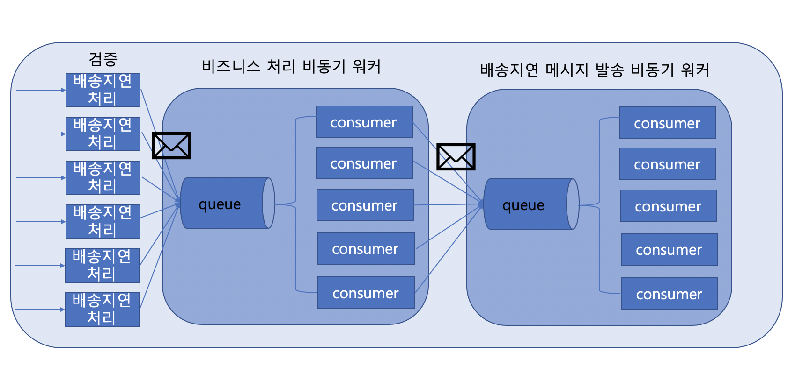
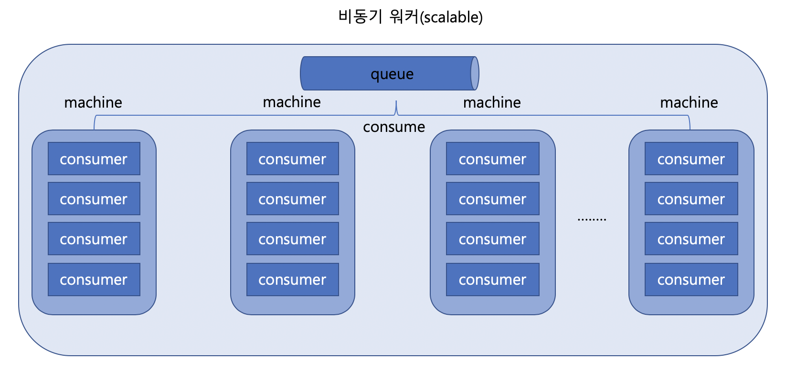
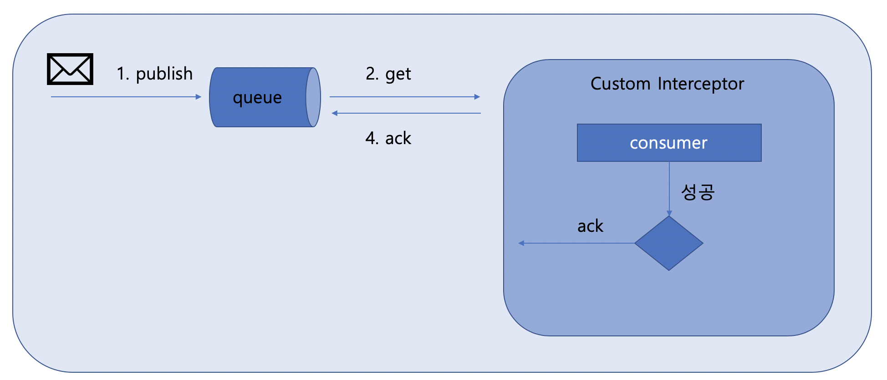
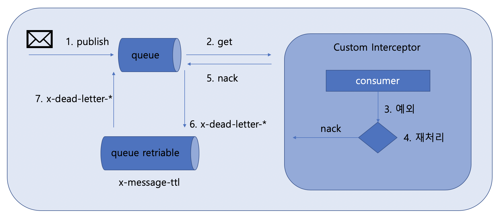

RabbitMQ, 이럴때 사용하자
래거시 배송지연 처리 기능
배송지연 처리 기능을 하는 시스템이 있다고 가정해보자.

배송 처리 과정은 위의 플로우대로 진행된다.
판매자가 배송 지연 요청을 했을 경우 실시간이 아닌 배송 지연 안내 배치를 수행하여 배송지연 메시지가 발송되게 된다. 여기서 기존 시스템의 대표적인 문제는 배송 지연 처리에서 복잡한 비지니스 로직이 수행된다는 점과, 반복되는 테스크 수행으로 인해 처리속도가 저하된다는 점이 있다.
문제 해결하기
(1) 실시간 배송지연 메시지 발송하기

배송지연 문자를 발송하는 비동기 워커를 구성한다. REST API 를 통해 배송지연 처리 후 큐에 배송지연 문자 요청을 쌓는다.
큐에 쌓이고 배송지연 문자를 발송하는 일은 비동기로 처리되기 때문에 배송지연 처리를 진행하는 비즈니스 로직은 큐에 요청을 쌓은 후 기다리지 않고 다른일을 진행할 수 있다.
(2) 처리 속도 개선
배송 지연 처리를 하기 위해 비즈니스 로직을 실행 하기 전 반복적으로 실행하는 태스크로 인해 병목현상이 발생하고 속도가 저하된다.
이를 해결하기 위해 병목 현상을 유발하는 반복작업을 비동기 워커로 분산처리 한다.
(3) 완성

장점
(1) 쉽게 분산처리 가능

이렇게 비동기 워커로 구성하게 되면 쉽게 분산처리 할 수 있는 구조가 된다. 결국 consumer 를 생성하는 machine 을 늘리면 되기 때문이다.
(2) 자동 재처리 및 실패 감지
- 정상 작동 플로우

- 예외 발생하여 재처리 플로우
메세지를 처리하다가 문제가 생길 경우, 다음 메세지를 처리하기 위해 해당 메세지를 건너뛰어야 하는 경우가 발생한다.
일시적인 API 호출 장애나 연결문제가 있는 경우 나중에 재시도 하면 정상처리 될수 있기 때문에 메세지를 잠시 다른 곳에 보관한다.
해당 플로우를 위해 먼저 queue에 dead letter 설정을 해준다. 그 후, consumer에서 nack나 reject를 보내면 x-dead-letter-exchange에 설정된 exchange로 메세지가 보내진다.
해당 exchange는 설정된 exchange type 에 따라 메세지를 queue retriable로 전달한다.
전달된 메세지를 x-message-ttl 시간만큼 큐에 머문 후 설정된 exchange에 따라 queue로 보내진다.

또한 해당 메세지가 더이상 큐에서 쌓여 Consumer에 의해 처리되지 않기를 바란다면 Consumer에 Recoverer를 구현하면 된다.
발생한 Exception은 Recoverer가 가로채 예외 처리하며, 작업 중 예외가 발생한 메시지는 다시 Queue에 쌓이지 않게 된다.
주의
auto ack : true
메시지를 가져오면 자동으로 ack를 보내서 RabbitMQ 서버에서 메시지가 사라지게 된다.
auto ack : false
메시지를 가져와서 ack를 보내기 전 까지는 이 메시지를 다른 컨슈머에게 주지도 않고, 큐에서 제거하지도 않는다. 정상적으로 처리가 되지 않을 때, ack 대신 nack를 보내면 된다.nack나 reject를 보낼 때 requeue=false로 설정하지 않으면, 이 메시지는 큐의 원래 위치로 돌아가게 된다.
그러면 이 컨슈머나 혹은 다른 컨슈머가 그걸 다시 가져와서 처리하게 된다.
이렇게 다른 컨슈머가 바로 처리해도 되는 비즈니스가 맞는 곳이라면 dead letter를 설정하지 말고 그대로 requeue 하도록 설정한다.
출처
https://m.blog.naver.com/tmondev/220419853534
https://blog.leocat.kr/notes/2018/07/31/rabbitmq-delayed-queue
https://blog.leocat.kr/notes/2018/06/20/rabbitmq-dead-lettering-with-reject-or-nack